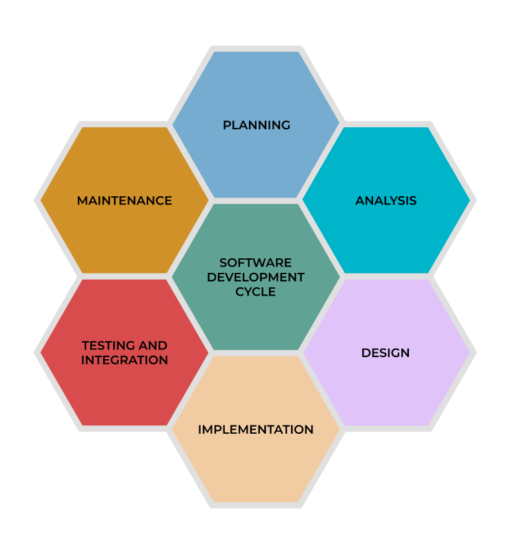

0.3 Software Development Lifecycle Management
{kind=link}
Note
Everything dies - even software
All the applications will be created, updated, reworked, and removed.
“Explain Like I’m 5” (ELI5) of SDLC

Imagine you want to build a treehouse. Here are the stages you might go through, similar to the stages in software lifecycle management:
Requirements Analysis: You talk to your friends about what they want in the treehouse - a rope ladder, a window, or maybe even a slide. You figure out what you need to make it the best treehouse for everyone.
Design: Now you sketch out what the treehouse is going to look like and where all the parts will go.
Development: This is when you get out your tools and start building the treehouse according to your design.
Testing: Before you let your friends in, you need to make sure it’s safe. You check if the ladder is sturdy, the floor doesn’t creak, and the slide works. If you find anything wrong, you fix it.
Deployment: Finally, the treehouse is ready. You and your friends start using it for your club meetings or just to hang out.
Maintenance: Over time, you might need to fix a loose board or paint a wall. You also listen to your friends if they have any cool new ideas, like adding a flag or a secret trapdoor, and then you add those.
Retirement: One day, when you guys are older and don’t use the treehouse anymore, you might decide to take it down or maybe remodel it for someone else to use.
Software Development Life Cycle
Software lifecycle management (SLM) refers to the process of managing all aspects of a software application throughout its lifecycle, from the initial design and development phase through its eventual retirement or replacement. It helps to ensure the software remains effective and efficient and meets the business’s evolving needs over time. SLM is a part of the larger discipline known as Application Lifecycle Management (ALM).
Here are the key stages involved in software lifecycle management:
Requirements Analysis: The process begins with understanding and documenting the requirements for the software. This involves detailed discussions with stakeholders to fully grasp what they need the software to achieve.
Design: After requirements are understood, the design phase begins. This includes designing the software architecture and user interface.
Development: In this phase, the actual coding of the software takes place. The software is developed based on the design specifications.
Testing: Once the software is developed, it goes through rigorous testing to identify and fix any bugs or issues. The software’s functionality is tested to ensure it meets the requirements outlined in the initial phase.
Deployment: After testing and necessary modifications, the software is deployed to the users. This can be done in stages depending on the deployment model.
Maintenance: Post-deployment, the software will need ongoing maintenance to address any issues, make improvements, or add new features as per user feedback or changes in business requirements.
Retirement: When the software is no longer needed, or a more efficient solution is available, the software is retired. Data migration and user transition to the new system are the key aspects of this phase.
SDLC management is critical for the success of any software development project. It helps to ensure that the software is developed on time, within budget, and to the required quality standards. It also helps to identify and mitigate risks, improve communication and collaboration among team members, and ensure that the software meets the needs of the end users.
Software Development Life Cycle Management Methodologies
Note
Software Development Life Cycle (SDLC) Management Methodologies are approaches or frameworks that are used to structure, plan, and control the process of developing information systems. They provide a systematic, organized, and structured approach to software development to ensure the quality and correctness of the software developed.
{kind=link}
SDLC methodologies:
Waterfall Model: One of the earliest models, this is a sequential approach where each phase of the SDLC must be completed before the next phase begins. It’s simple and easy to understand but lacks flexibility as changes can be difficult to implement once a phase is completed.
Agile Model: Agile methodology emphasizes flexibility, collaboration, customer feedback, and small, rapid iterations. Changes can be made at any point in the project, making it ideal for projects where requirements are likely to change.
Scrum: This is a type of Agile methodology where development is broken down into sprints (small time frames) and at the end of each sprint, a potentially shippable product increment is delivered.
Lean: Lean focuses on delivering value to the customer and optimizing efficiency and resource usage. It emphasizes eliminating waste, amplifying learning, deciding as late as possible, delivering as fast as possible, and continuously improving.
Spiral Model: This model combines elements of both design and prototyping in stages. It’s good for large and complex projects. The process starts with a small set of requirements and goes through each development phase for those set of requirements.
Kanban: This is a visual approach to the Agile methodology. It emphasizes real-time communication and a flexible adaptation of the workflow. Kanban uses a board with columns representing the production line.
Extreme Programming (XP): This is another type of Agile methodology that emphasizes the quality of the software. It includes continuous feedback, pair programming, and the inclusion of the customer in the development process.
Rapid Application Development (RAD): RAD is a type of incremental model. The components or functions are developed in parallel as if they were mini projects. It is suitable for projects where the requirements are well known in advance and the project scope is constrained.
V-Model: This is an extension of the Waterfall model. Instead of moving down linearly, the process steps are bent upwards after the coding phase to form a V shape, representing the validation phases corresponding to the development phases.
DevOps: DevOps methodology emphasizes communication, collaboration, integration, automation, and cooperation between software developers and other IT professionals while aligning with business objectives. It focuses on short, frequent changes, infrastructure as code, and continuous delivery.